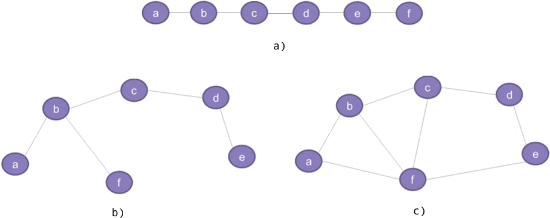
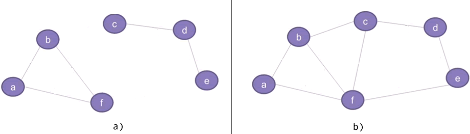
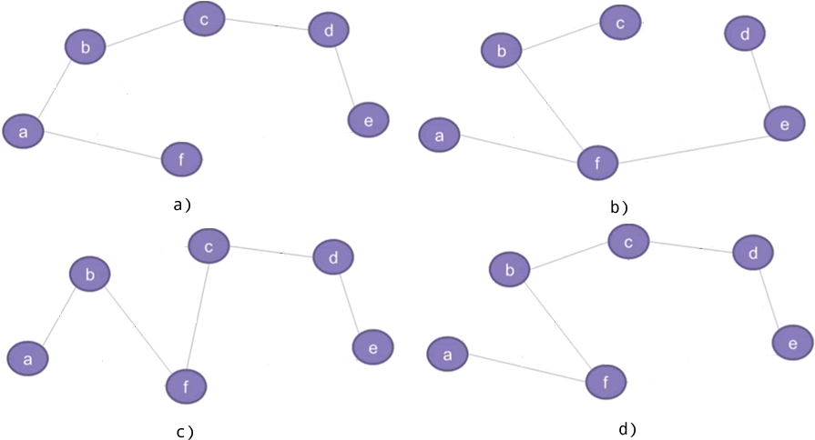
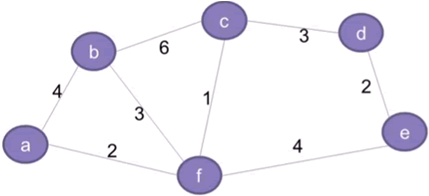

首页 > 编程笔记
最小生成树
数据结构提供了 3 种存储结构，分别称为线性表、树和图，如图 1 所示。
本节要讲的最小生成树和图存储结构息息相关，接下来我们将结合图存储结构，给大家讲解什么是生成树，以及什么是最小生成树。
图 2 a) 是一个非连通图，比如图中找不到一条从 a 到 c 的路径。图 2 b) 是一个连通图，因为从一个顶点到另一个顶点都至少存在一条通路，比如从 a 到 c 的通路可以为 a-f-c、a-b-c 等。
所谓生成树，指的是具备以下条件的连通图：
图 2 b) 是一个连通图，其对应的生成树有很多种，例如：
图 2 b) 对应的生成树还有很多，图 3 仅给大家列出了其中的 4 种。也就是说，一个连通图可能对应着多种不同的生成树。
我们将 6 座城市分别用 a~f 表示，6 座城市之间可以修建的公路以及所需资金如下图所示：
最小生成树指的就是在连通网中找到的总权值最小的生成树。在连通图查找最小生成树，常用的算法有两种，分别称为普里姆算法和克鲁斯卡尔算法，您可以点击它们做详细地了解。

图 1 3 种存储结构
图 1 3 种存储结构
a) 是线性表，b) 是树，c) 是图。 在图存储结构中，a、b、c 等称为顶点，连接顶点的线称为边。
线性表是最简单的存储结构，很容易分辨。树和图有很多相似之处，它们的区别是：树存储结构中不允许存在环路，而图存储结构中可以存在环路（例如图 1 c) 中，c-b-f-c、b-a-f-b 等都是环路）。本节要讲的最小生成树和图存储结构息息相关，接下来我们将结合图存储结构，给大家讲解什么是生成树，以及什么是最小生成树。
生成树
根据所有顶点之间是否存在通路，图存储结构可以细分为连通图和非连通图。举个例子：

图 2 连通图与非连通图
图 2 连通图与非连通图
图 2 a) 是一个非连通图，比如图中找不到一条从 a 到 c 的路径。图 2 b) 是一个连通图，因为从一个顶点到另一个顶点都至少存在一条通路，比如从 a 到 c 的通路可以为 a-f-c、a-b-c 等。
所谓生成树，指的是具备以下条件的连通图：
- 包含图中所有的顶点；
- 任意顶点之间有且仅有一条通路。
图 2 b) 是一个连通图，其对应的生成树有很多种，例如：

图 3 生成树
图 3 生成树
图 2 b) 对应的生成树还有很多，图 3 仅给大家列出了其中的 4 种。也就是说，一个连通图可能对应着多种不同的生成树。
最小生成树
借助生成树，可以解决实际生活中的很多问题。例如，为了方便 6 座城市中居民的生产和生活，政府要在 6 座城市之间修建公路。本着节约资金的原则，6 座城市只需要建立 5 条公路即可实现连通，如何修建公路才能最大程度上节省资金呢？我们将 6 座城市分别用 a~f 表示，6 座城市之间可以修建的公路以及所需资金如下图所示：

图 4 城市道路模拟图
图 4 城市道路模拟图
如图 4 所示，在连通图的基础上，我们赋予每条边一个数值，这样的连通图又称连通网。一个连通网对应生成树可能有多种，每个生成树中所有边的权值的总和，就是这个生成树的总权值。例如结合图 4 ，图 3 a) 生成树的总权值为 17，图 3 c) 的总权值为 13。a~f 这 6 个顶点各自代表一座城市，连接两个顶点的边代表两座城市之间可以修建公路，每条边对应的数值称为权，表示修建公路所需要的资金。
最小生成树指的就是在连通网中找到的总权值最小的生成树。在连通图查找最小生成树，常用的算法有两种，分别称为普里姆算法和克鲁斯卡尔算法，您可以点击它们做详细地了解。
关注公众号「站长严长生」，在手机上阅读所有教程，随时随地都能学习。内含一款搜索神器，免费下载全网书籍和视频。

微信扫码关注公众号